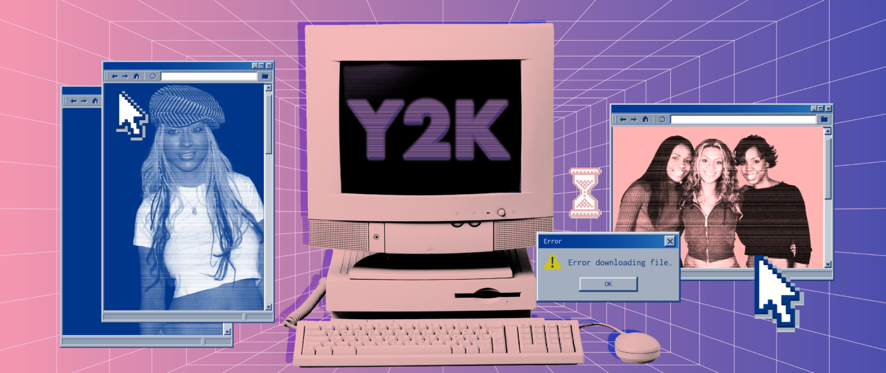

Y2k social media has become a very nostalgic thing for a lot of the newer generations in the past decade. As our society becomes more divided and our communication platforms become less about community and more about pushing product, the general public yearns for the simpler times. As Medium Magazine states, "Nostalgia for the 2000s comes from a shift towards raw personal expression, simpler digital boundaries, and a rejection of today's algorithm-driven feeds".
This page is meant to explore what made some of these platforms so popular back in the day, and show the potential of what could have been if this cultural shift never existed.
